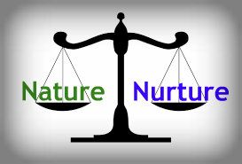

This course examined how the principles of learning relate to behaviour and children and adults and how individuals from diverse backgrounds learn to achieve and develop. This course also examined the question: How do people learn?
“How do people learn?” This question has been a debate between theorists for thousands of years. (Hammond, Austin, Orcutt, & Rosso, 2011). People have always been interested in learning. Greek philosophers Plato and Aristotle were some of the first theories to enter in this debate. Plato, the rationalist, believed that knowledge is innate and within us and Aristotle, the empiricist, believed knowledge is found outside ourselves and through the world around us (Hammond et al., 2011). These early debates led the path for many other theorists to debate how people learn, such as Edward Thorndike who began the systematic study of learning in the 1890’s (Petri & Mishkin, 1994). There are many different ways people can learn and today the learning debate is ongoing (Hammond et al., 2011).”
-Excerpt from the introduction in Reflection Paper, EDPS 646
Learning theories studied in this course were behaviourism, cognitivism and cognitive learning, social cognitive theory, experiential learning theory, and bioecological models of learning. I really enjoyed learning the bioecological model as it serves as a model that takes in a holistic approach to learning as it encompasses connections from all systems. During my practicum, working alongside social workers, I developed a more mindful approach that encompasses working towards systemic worldviews, as Bronfenbrenner suggested looking at all systems.
“The bioecological model developed by Urie Bronfenbrenner serves as an integrated framework for understanding the connections between an individual, including their biological, socio-emotional, and cognitive characteristics along with the diverse social and cultural contexts in which an individual progresses (Zhou and Brown, 2015). This model examines how an individual’s surrounding environment influences their life. The bioecological model is beneficial to educators and counsellors as it examines how an individual is influenced by multiple external factors. The strengths of this model serve as a guide to help us understand how an individual develops and learns through a complex system. The bioecological can be readily applied to readily world problems as well. Bronfenbrenner's’ systems approach allows practitioners, researchers and community activists to develop interventions that carter to the different bioecological systems the individual interacts with. However, the bioecological model has undergone criticism as academic research continues to find issues and complexities within the model as Bronfenbrenner was continually re-assessing, revising as well as regretting and renouncing his earlier work (Tudge, Mokrova, Hatfield, & Karnik, 2009). Future research would be beneficial as confusion lies upon which version of the theory should be applied.”
My second sparkling moment reading the McCabe (2007) and Poonwassie & Charter (2001) articles where they discussed how crucial it is to understand traditional worldviews and versus those of the general Canadian population. McCabe (2007) argues that improper psychological interventions that are not congruent with Indigenous populations can cause another form of colonization. Furthermore, Poonwassie & Charter (2001) techniques for facilitating empowerment to Aboriginal clients is an important step towards de-colonization. Understanding our client’s worldviews and gaining an understanding of ours is crucial in the healing and therapeutic process. Conflicting worldviews and ideals in the counselling process can lead to imbalance, negativity, and a disconnect between the counsellor and client.”
- Excerpt from my Group Research Paper, EDPS 646
Below is a link to the full paper, Group Research Paper.
Bronfenbrenner'sBioecological ModelLifespan Human Development 648
This course examines developmental themes and theories and what makes us who we are across our lifespan as children, adolescents, and adults.
One of the most challenging, yet intriguing assignments in this program was our Controversial Issues in Human Development Paper in EDPS 648. My partner and I choose to discuss Nature versus Nurture in Depression. This was one of the most challenging papers due to the heaviness of biology behind it. Researching the genetic findings through which depression is detected was very time consuming and again challenging but very rewarding to come out with an amazing breadth of knowledge surrounding the genetic factors that cause depression (5-HTTLPR Gene, Brain-Derived Neurotrophic Factor Val 66-Met Polymorphism (BDNF) and Hypothalamus-Pituitary- Adrenal (HPA) Axis Dysregulation) and environmental factors (childhood maltreatment, chronic stress, abuse, and neglect).
Below is a link to our final paper.
Final PaperDiscussion Board Posts, EDPS 648
This discussion board post from week 8 below, displays an example of adolescent depression most likely exacerbated by the child’s parents (environment factors).
“As many of us have mentioned, I think that a person-centered therapeutic approach focusing on Rogers core values of unconditional positive regard, congruence, and empathic understanding (Raskin, Rogers, & Witty, 2014). I think the critical factor that Dean needs is the therapist listening without prejudice and without a private agenda knowing that Dean can share in whatever way he is comfortable.
Dean appears to be spiraling and unable to regulate his emotions and almost taking the passenger sit to life in regards to his career and confusing feelings of his sexuality. I think that in counselling we should explore his alienation from his mother as this could be a contributing factor to his low self-esteem and confidence. Sher (2017) argued that adolescents that are alienated from one parent are more likely to suffer from depression, guilt, low self-confidence, and alcohol abuse. Sher (2017) states that training courses on parental alienation are becoming more popular for mental health professionals as the repercussions of alienation and neglect can be severe and detrimental to children’s / adolescent’s health. I am curious to see what some of these training courses would look like. I liked Julia's idea of Empty Chair Technique and Huma's idea of the "talk meter" to use with Dean in his sessions.”
Raskin, N., Rogers, C., & Witty, M. (2014). Client-centered Therapy. In D. Wedding & R. J. Corsini (Eds.), Current psychotherapies (10th ed, pp. 533-567). Belmont, CA: Brooks/Cole.
Sher, L. (2017). Parental alienation: the impact on men's mental health. International Journal of Adolescent Medicine and Health, 29(3), 98-104. doi: 10.1515/ijamh-2015- 0083.
